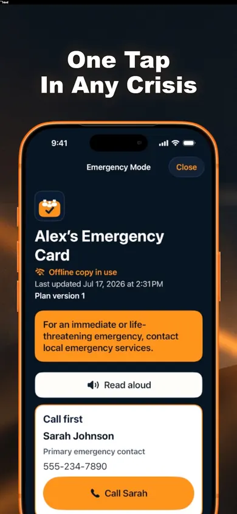

Free Emergency Card, offline access and Emergency Snapshot PDF.
What happens in this situation?
Tap each question to reveal the limitation and a preparation step. This is an information-access walkthrough, not a readiness score or emergency drill.
No internet. Phone working.
The saved card is designed to open offline.
Family Ready's listing says Emergency Mode can display your saved card without internet once the phone is unlocked. Do not assume every sharing or calling feature works offline too.
Before you rely on it
At a calm, convenient time, open your saved card on your own phone without internet and check that the information you expect is there. Restore your normal connection afterward. Do not do a connectivity test during an emergency.
The listing describes access after the phone is unlocked. This is not a claim that Family Ready appears on a locked screen, replaces Apple Medical ID, or lets another person unlock your device.
Before you rely on it
Use your normal authorized unlock method when checking your card. Give an appropriate printed copy to someone who may need the information; don't make access depend on sharing your device passcode.
The app's listing explicitly recommends a printed copy because a lost phone or empty battery can make the app unavailable.
Before you rely on it
Prepare a current printed copy and decide who should have it and where it can be found. Review what it contains before sharing it. Do not deliberately drain your battery or hide your phone to test this.
Family Ready Plus lists trusted-person invitations and section permissions. Those are different from the free card stored on your device. A printed or exported copy can also be retained by its recipient.
Before you rely on it
Choose an appropriate sharing method and confirm what the helper can actually access. Preview the information first, obtain permission where needed, and share only the sections relevant to their role.
Being able to read a phone number is different from being able to complete a call. Communication networks can be disrupted. Family Ready does not call or message anyone automatically and is not an emergency-response service.

Actual listing screenshot with sample contact details. The app still requires normal device access; it does not dispatch help.
What the screenshot tells you.
The sample Emergency Mode screen shows an offline-copy notice and an update date. Those are two different checks: whether you can open the record, and whether its content is still current.
A large button is useful only if the right person can reach it and the details are right. Review contact details with the people concerned before treating the card as ready to use.
Don't call an emergency number to test this page or the app. In an actual emergency, contact your local emergency service.
Three first-week checkpoints.
After you create the card: find it.
Open the saved card yourself using normal device access. Check the information you've entered. This page doesn't ask you to type any names, numbers, medications or addresses.
Before someone relies on it: share appropriately.
Preview a dated Emergency Snapshot PDF, choose an appropriate recipient and confirm where the copy will be kept. Ready.gov recommends making, sharing and practicing a household communication plan.
Before the week ends: choose a review point.
Set a time to revisit the details with the people involved, and update them when circumstances change. This page does not schedule reminders or verify the contents of your plan.
The first-week timing is an editorial suggestion. Ready.gov supports collecting, sharing and practicing a plan; it does not prescribe this three-step schedule.
Free printable / two wallet-size copies
Carry the same meeting plan.
A charged phone is one way to keep a plan handy. These original blank cards give two household members a paper copy of the meeting places and contact they have agreed on. They are a practical planning aid, separate from Family Ready's app and its Emergency Snapshot PDF.
US Letter. Print at 100% or Actual size, then cut on the dotted lines. Each card is 3.5 x 2.25 inches (89 x 57 mm). No signup or app is needed. Fill in the paper privately; this page has no fields for your contacts or locations.
Copy 1: household meeting plan
Nearby meeting place
Write an agreed, clearly identifiable place.
Outside-area or alternate place
Write an agreed alternative and how to identify it.
Chosen contact
Write the name of someone who agreed to receive updates.
Phone
Write the number you checked with that person.
Last checked
Write the date you confirmed this information.
Next review
Write a review date agreed by your household.
Copy 2: household meeting plan
Nearby meeting place
Write an agreed, clearly identifiable place.
Outside-area or alternate place
Write an agreed alternative and how to identify it.
Chosen contact
Write the name of someone who agreed to receive updates.
Phone
Write the number you checked with that person.
Last checked
Write the date you confirmed this information.
Next review
Write a review date agreed by your household.
A calm review, before the cards are needed
Agree on the places and contact. Consider a nearby meeting place and one outside your immediate area. Check that the locations fit your household's access needs. An out-of-town contact can help relay updates if local communications are disrupted.
Check the details together. Confirm the contact number with the person concerned. Keep school and workplace emergency procedures in mind. This card does not authorize a child pickup or override evacuation instructions.
Practice finding the plan. At a convenient time, find the card and point to both places on a map. Explain what you would do if a place were inaccessible. Do not call an emergency number or travel into danger as a test.
Write a review date. Note anything that needs changing after the discussion. Recheck the cards when a location, phone number or household need changes. Give updated copies only to the appropriate people.
Follow instructions from local authorities. Move to a meeting place only when it is safe. A card cannot guarantee that a place, route, contact or communications network will be available. Keep door codes, passwords and identity numbers off a card that could be seen by others.
The card layout and review exercise are original work from Honest Little Apps. Planning concepts come from Public Safety Canada: Make an Emergency Plan and ISED Canada: Create an emergency telecommunications plan, read 5 November 2026. They recommend agreed meeting places, an out-of-town contact, paper copies and practice. This printable is not an official government template and has no government endorsement. The full fields, instructions and limitations are available above as HTML.
Free card. Optional sharing features.
Free in Family Ready
Emergency Card, Emergency Mode, offline access, household plan, kit checklist, local search, encrypted backup/restore and a dated Emergency Snapshot PDF are listed as free.
Family Ready Plus
Trusted-person invitations and permissions, household sync, guided reviews, important-date reminders, access drills and additional printable packs are listed under the monthly or annual subscription.
No account is needed to start. The listing says information is uploaded if you sign in to share with invited people. Apple's privacy label lists data that may be linked to you; review it before using optional sharing. This is not a blanket no-data-collection claim.
Keep the card and its limits clear
Make the useful information easier to find.
Start with Family Ready's free Emergency Card and dated Snapshot PDF. Review both the information and how the right person can reach it.
This guide concerns access to records. It does not replace local emergency instructions, medical guidance or a complete household preparedness plan. It makes no guarantee that a device, network or contact will be available.